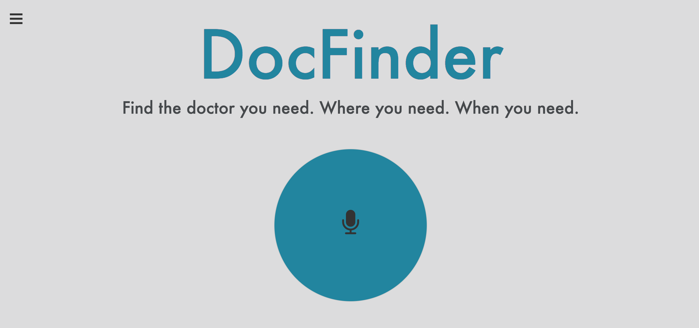
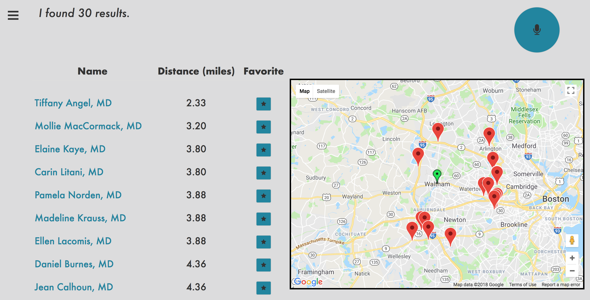
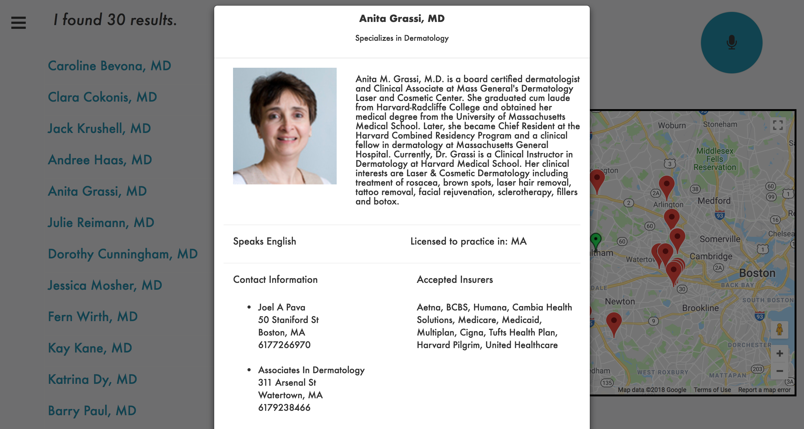
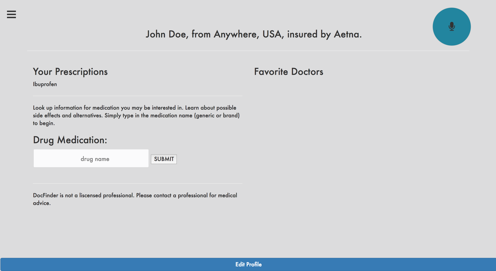
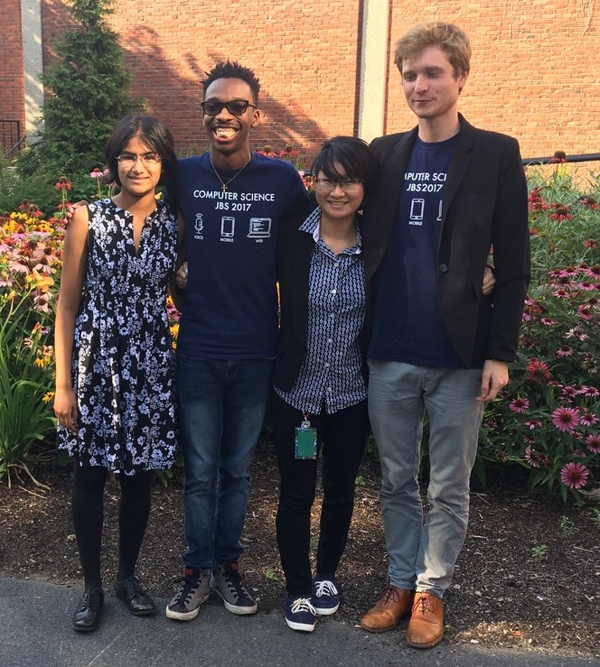

DocFinder
Find the doctor you need. Where you need. When you need.
A voice-interactive healthcare app I built with three classmates at Brandeis (2017–2018), and winner of the AVIOS Student Speech Application Contest.
DocFinder is a fully voice-interactive web application that matches patients with medical providers in their area using search criteria such as insurance, specialty, and languages spoken. Results appear on an interactive map and surface details that are often overlooked, including the payments doctors receive from pharmaceutical companies to promote their products.

From the home screen, a user taps the microphone and speaks a request, naming a specialty, location, insurance, and preferred language — for example, “Find me a dermatologist in Waltham, MA who takes Aetna.” The app sends that phrase to the DialogFlow API, which parses it into structured fields (doctor type, location, and insurance) and returns them as JSON. DocFinder passes those parameters to the BetterDoctor API, a nationwide provider database, which responds with matching doctors. The app then presents them in a table ordered by proximity.

Each result opens a profile with a photo, biography, and other details relevant to the doctor's practice. The profile also includes a chart of payments received from pharmaceutical companies, courtesy of the Open Payments Data API, and a Google Maps marker showing the doctor's location relative to the user.

Signed-in users can also favorite specific doctors, log their prescriptions, and look up drug information through a built-in search engine powered by the Iodine API.

Resources
Collaborators: Nila Mandal, Claire Sun, and Eben Holderness

Github Repository
Slide Deck
Demo Video
Awards
Best Speech Application: The AVIOS 2017/2018 Student Speech Application Contest
Media
AVIOS Speech Application Contest (2018)Student Feature Case Study: Provider Data powers Doctor search with speech recognition (2017)